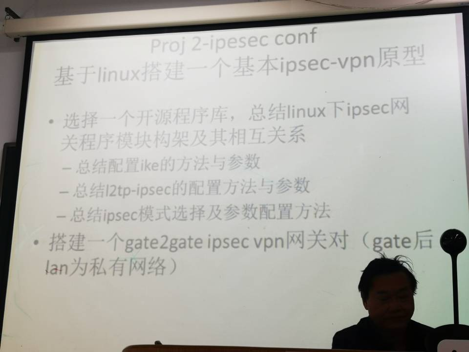

起因
要做信安原理的第二个大作业：

但是我们之前没学过计网啊，计网是下学期的课了。
配不成，那只能到 GitHub 上面寻觅机缘了。机缘是遇到了，但是暂时还读不懂……
这是因为我个人太垃了，身为这个专业的学生，居然仅仅是在虚拟机上面运行过 Windows 以外的操作系统。
因此，不是很了解 shell 脚本语言，只是一年前的最近几天学了一下基本的语法，此后就再也没有接触过了。
同时，感觉 Windows 这个操作系统不适合我这种计算机初学者，这篇也算是学一点自己未来或许没什么地方能用到，但是目前看来也不算不重要的东西。
本文中的所有脚本基本来自于 setup-ipsec-vpn 以及 Linux Shell Scripting Cookbook 这本书。于是这篇既是在读别人代码，也是在做读书笔记。
经过
1. 冒号分隔
1 | export PATH="/usr/local/sbin:/usr/local/bin:/usr/sbin:/usr/bin:/sbin:/bin" |
使用冒号，而非分号，如若需要添加一条新的路径入环境变量，那么可以：
1 | export PATH="$PATH:/usr/local/share" |
2. 时间
1 | SYS_DT=$(data +%F-%T | tr ':' '_') |
| %A | %B | %D | %Y | %m | %d | %H | %M | %S | %F | %T |
|---|---|---|---|---|---|---|---|---|---|---|
| Saturday | November | mm/dd/yy | 2010 | 10 | 18 | 23 | 50 | 10 | %Y-%m-%d | %H:%M:%S |
所以 %F 意为 full time，%T 的意思嘛，大概就那个意思。两个总起来就是：%Y-%m-%d-%H:%M:%S。
3. tr
我猜是 transform 的意思。
统一是把前者转换为后者：
1 | tr ':' '_' |
然后 101 行出现了一个：
1 | VPN_IPSEC_PSK=$(LC_CTYPE=C tr -dc 'A-HJ-NPR-Za-km-z2-9' < /dev/urandom | head -c 20) |
这个主要还是看
1 | tr -dc 'A-HJ-NPR-Za-km-z2-9' < /dev/urandom |
首先，/dev/random:/dev/urandom 是两个用于产生伪随机数的文件。
输入重定向后，作为了 tr 的输入，-d 指的是删除后续给出的集合，而 -c 指的是将后面的集合取补。
在这里就是将 'A-HJ-NPR-Za-km-z2-9'，先取补，也就是得到 {I, O, Q, l, 0, 1} 这几个字符，然后将其从全集中删去。
那么输入的字符串，就会根据这个规则进行替换，看起来就是一种对伪随机数的加密。
由于输出是无限的，因此要取前 x 个（head -c 20）。
4. 函数参数
1 | exiterr() { |
$1 是函数的第一个参数。
对于 exiterr2 这个函数，"'apt-get install' failed." 是调用 exiterr 函数时传入的参数。
5. 文件描述符
- 0 代表
stdin； - 1 代表
stdout； - 2 代表
stdin。
一般来说是这样：
1 | echo 1> 1.txt # 什么都不会发生 |
这是因为 1> 是一个标准输出重定向的意思。
1 | echo 1 >&1 # 输出了一个 1 |
在这里的 &1 和 &2 是文件描述符，我也可以定义一个新的文件描述：
1 | exec 3>hahaha.txt # 无事发生 |
1 | exec 1>hohoho.txt # 无事发生 |
实际上输出到了 hohoho.txt 中了而已。
/dev/null 是用来倒垃圾的厕所，什么都可以重定向到它这里。而 2>/dev/null 会过滤掉所有的错误。比如到现在，还没有一个叫 lw 的程序，我直接使用是这样的：
1 | lw |
错误就是被 /dev/null 吃掉了。
总而言之嘛，前 69 行都是在看这个操作系统到底是不是 Ubuntu。71 到 73 行在看是不是 root 权限。75 到 86 行在看是不是 wlan。
总之，应该有探测出来的接口，比如 ens33，比如 wlan，比如 eth0。其次，被探测出来的网络接口，其 $def_iface/operstate 肯定不能是 down / unknown。
总之嗷，93 行之前都是环境上的检测。
6. grep
grep 本是一个匹配工具，好像很多时候都用来做 filter 了。
总之不会就 --help，里面写的蛮全的。
所以从 106 到 118 都是在做 VPN_IPSEC_PSK, VPN_USER, VPN_PASSWORD 的合理性检验。
120 到 127 是在看 DNS, iptable 有没有问题。
7. if
| -f | -d | -x | -w | -r | -L | -e |
|---|---|---|---|---|---|---|
| 正常文件名/路径 | 目录 | 可执行 | 可写 | 可读 | 链接 | 存在 |
| -z | -n |
|---|---|
| 空串 | 非空串 |
8. && / ||
&&是执行前者成功才执行后者；||是前者和后者只有一个，也肯定会有一个执行。
所以 165 行之前又是在下载东西。
9. := / :- / = / -
这里指的都是这种用法：
1 | skyleaworlder="" |
- :=，
skyleaworlder若为空，echo之后，skyleaworlder值为NAME的值；echo输出NAME的值； - :-，
echo之后，skyleaworlder值仍旧为原值；echo输出NAME的值； - =，
echo之后，skyleaworlder如果未定义，则其值为NAME的值；echo输出为skyleaworlder的原值； - -，
echo之后，skyleaworlder值仍旧为原值；echo输出为空；
于是 183 行之前又在下东西了。
10. 多行
第一次见到这种语法还是 ruby，不过这么看的话，ruby 应该是借鉴的 shell：（197-202）
1 | cat > Makefile.inc.local <<'EOF' |
这里的 EOF 并不是固定的，只要是一个东西就行，可以是 sad，可以是 skyleaworlder，但是要首尾相同，用 EOF 或许是因为它不经常出现在文本里。
之后的 210-218 是在干什么啊？？？
这为什么要看处理器核心个数的？
从 232 行开始就是对 IPsec 的配置，直到 284 行，也是使用的这个多行语法。
292 到 296 是 IPsec 预共享密钥的设置。
298 到 336 都是 xl2tpd 的设置。
同时我也不知道为什么 352 到 386 有一段在配共享内存。
388 到 425 在配 iptable。
至于 504 之后就都是普通的用户信息了。
结果
所以说还是只是通过这个脚本来学习了一些些 shell 的语法。
对于完成整个作业并没有起到很大的帮助。
要真的做出作业来，还是得通过其中 cat > xxx.conf <<EOF EOF 中的内容对照 RFC 和 xl2tpd, swan 等项目的大体框架，读文档，了解各个参数的用途。
因此，一周过去了，前两天都在划水，今天才算开始……
然而一周之后就要交 Ver1 了，我是觉得我做不完。
也没有那么多时间。